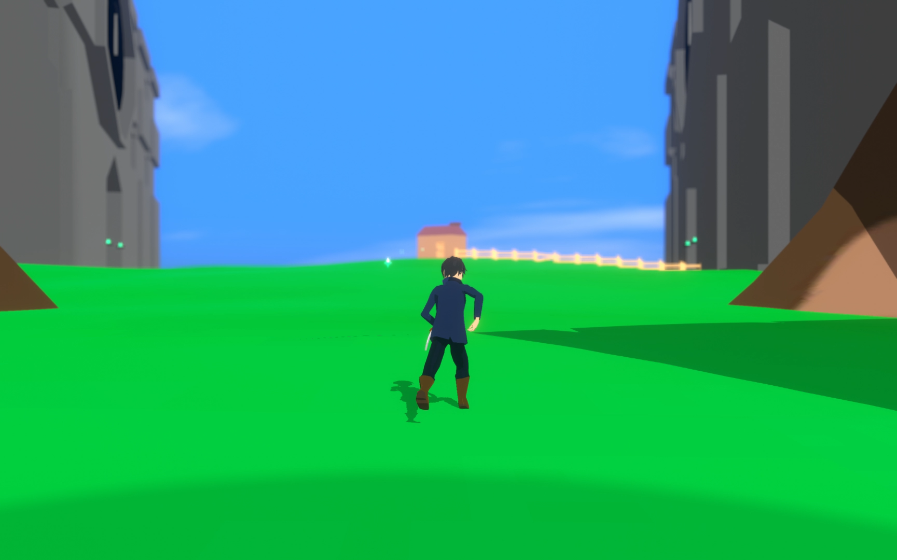
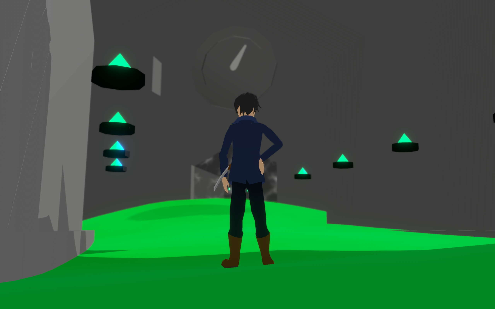
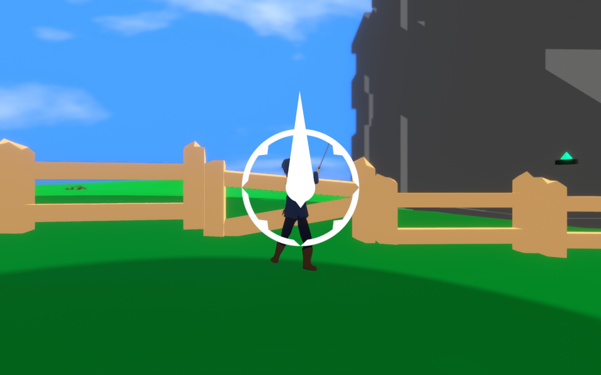

Games
Games // Rising Blade
Short 3D puzzle game made in the Unity game engine.
Developed over the first 8 months of 2021, this solo-project features
a swordsman who uses his offensive and evasive prowesses to navigate
a foreign, puzzle-laden landscape.



Games // Shatter Song
Rhythm-Based music game prototype
A small playeable prototype developed in Unity over the course of a month.
The mechanics are simple and easy to grasp, but I didn't think it
interesting enough to pursue to publication, and thus only made one level.
Controls >>
Burst: A/S/D >> Move: Arrow Keys
Games // Tails of War
Tactical-Turned-Based group project
Within the art team of this cat-themed Tactical RPG,
I was in charge of making the VFX as well as most
of the architechture.